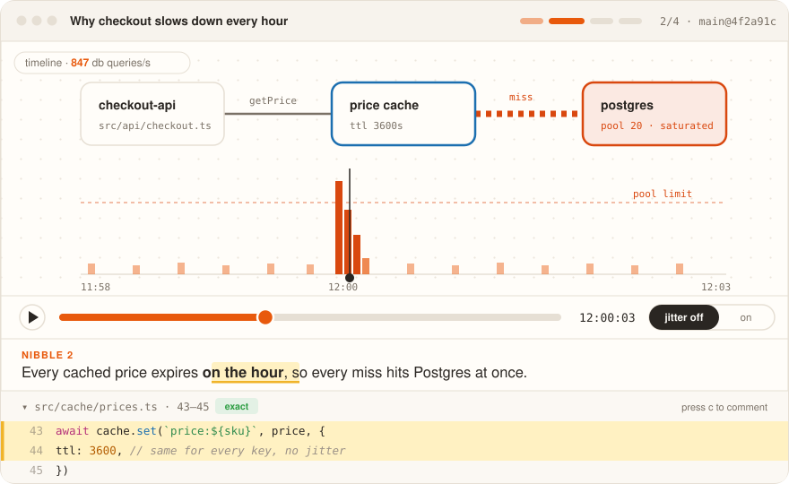
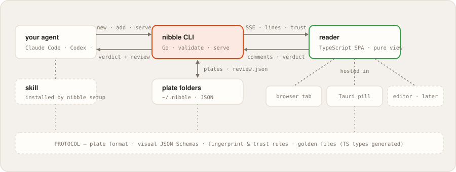

nibble turns what a coding agent wants to tell you — a bug, a plan, a 20,000-line PR — into an interactive visual model of your code, served in small nibbles: one claim, one visual, the evidence a click away.

nibble: so you can ruminate.
Coding agents read and write code faster than anyone can follow. What they hand back is a wall of prose full of file:line references — and you either rebuild the picture in your head, or approve what you don't understand.
Services, flows, state machines. People grasp shapes by seeing them, not by reading six paragraphs that describe one.
Races, stampedes, queues filling. A still explanation shows the start and the end with the interesting part missing — so in nibble you scrub, step and toggle it.
Comments pin to a node, an edge, a moment, a line — and go back to the agent with a trust level if the code moved underneath.
It writes a plate — a folder of small JSON files — through the nibble CLI, which validates every reference against the real code and refuses what doesn't exist. Then it blocks on nibble serve until you've read, poked and answered. Works with Claude Code, Codex, Cursor — anything that can run a command.

$ nibble new --title "PR 1247 · ch 1: payments" --about pr:1247 $ nibble add <plate> --caption "…" --visual timeline.json --ref "src/cache/prices.ts:43-45 @cache" $ nibble done <plate> $ nibble serve <plate> # blocks until your review; its exit wakes the agent
Captions are one or two sentences, never a paragraph.
Every visual has something to do: scrub, toggle, step, compare.
Nibbles move a camera across one shared map, not a slideshow.
Click anything to open the validated lines behind it.
Budgets that scale with the task; exceeding them needs a reason, printed on the plate.
Overview / standard / deep — layers on the same canvas, never a longer document.
PR review shows changed code, its unvisited dependents, and a ledger of what the plate didn't show you.
A map of the change in three rings — changed, dependent-but-unchanged, the rest — chapters agreed first on big PRs, and a not-shown ledger at the end.
One real request walked end to end: the map, a sequence stepping each hop, the code at every stop.
The failure replayed on a timeline you scrub; the proposed change beside its cost; the system you just joined.